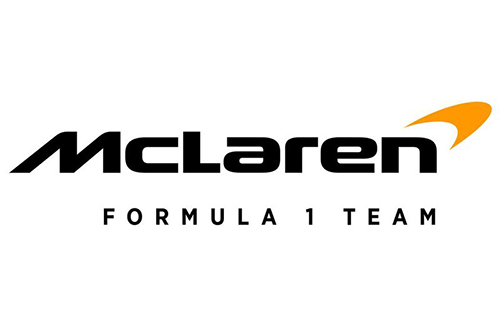

Mclaren

El McLaren F1 es un automóvil superdeportivo coupé de 2 puertas diédricas triplaza desarrollado y producido por el fabricante británico McLaren Automotive,
perteneciente al Grupo McLaren, junto al equipo McLaren de Fórmula 1. Fue diseñado por Gordon Murray y Peter Stevens.
Las versiones de competición participaron en las 24 Horas de Le Mans, siendo el primer coche en ganar la prueba en su debut; en el Campeonato Japonés de Gran Turismos;
y el Campeonato FIA GT.
Records
En su lanzamiento, el McLaren F1 era el automóvil de producción más rápido del mundo. Su velocidad máxima era de 372 km/h (231 mph) en el primer auto producido, por
el limitador con corte de inyección a las 7500 rpm. Posteriormente, el tope llegó a los 386,4 km/h (240,1 mph), con lo cual eclipsó al Jaguar XJ220, que hasta
entonces ostentaba una marca de 349,4 km/h (217,1 mph), logrando así un nuevo récord. Después de esto, McLaren le quitó el limitador al prototipo y alcanzó los 391
km/h (243 mph) al ser conducido por Andy Wallace.
En octubre de 2004, el F1 fue sobrepasado por el Koenigsegg CCR con 395 km/h (245 mph) y unos años más tarde, en 2007 por el Bugatti Veyron 16.4 con 407 km/h (253 mph)
. Posteriormente por el SSC Ultimate Aero, con 412 km/h (256 mph). En 2011, el Bugatti Veyron 16.4 Super Sport se convirtió en el poseedor del título de coche de
fabricación en serie más veloz del mundo, con un nuevo récord de 431 km/h (268 mph). El fabricante sueco Koenigsegg más tarde se impuso con su Agera RS, que alcanzó
284,55 mph (457,94 km/h).
No obstante, el McLaren F1 sigue siendo el automóvil de fabricación en serie con motor atmosférico más rápido del mundo.